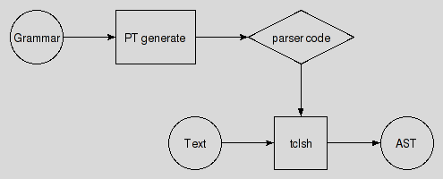

pt::pgen(n) 1.0.2 tcllib "Parser Tools"
Name
pt::pgen - Parser Generator
Synopsis
- package require Tcl 8.5
- package require pt::pgen ?1.0.2?
Description
Are you lost ? Do you have trouble understanding this document ? In that case please read the overview provided by the Introduction to Parser Tools. This document is the entrypoint to the whole system the current package is a part of.
This package provides a command implementing a parser generator taking parsing expression grammars as input.
It is the implementation of method generate of pt, the Parser Tools Application.
As such the intended audience of this document are people wishing to modify and/or extend this part of pt's functionality. Users of pt on the other hand are hereby refered to the applications' manpage, i.e. Parser Tools Application.
It resides in the User Package Layer of Parser Tools.

API
- ::pt::pgen inputformat text resultformat ?options...?
This command takes the parsing expression grammar in text (in the format specified by inputformat), and returns the same grammar in the format resultformat as the result of the command.
The two known input formats are peg and json. Introductions to them, including their formal specifications, can be found in the PEG Language Tutorial and The JSON Grammar Exchange Format. The packages used to parse these formats are
- peg
- json
On the output side the known formats, and the packages used to generate them are
- c
- container
- critcl
- json
- oo
- peg
- snit
The options supported by each of these formats are documented with their respective packages.
Example
In this section we are working a complete example, starting with a PEG grammar and ending with running the parser generated from it over some input, following the outline shown in the figure below:

Our grammar, assumed to the stored in the file "calculator.peg" is
PEG calculator (Expression)
Digit <- '0'/'1'/'2'/'3'/'4'/'5'/'6'/'7'/'8'/'9' ;
Sign <- '-' / '+' ;
Number <- Sign? Digit+ ;
Expression <- Term (AddOp Term)* ;
MulOp <- '*' / '/' ;
Term <- Factor (MulOp Factor)* ;
AddOp <- '+'/'-' ;
Factor <- '(' Expression ')' / Number ;
END;
From this we create a snit-based parser using the script "gen"
package require Tcl 8.5 package require fileutil package require pt::pgen lassign $argv name set grammar [fileutil::cat $name.peg] set pclass [pt::pgen peg $gr snit -class $name -file $name.peg -name $name] fileutil::writeFile $name.tcl $pclass exit 0
calling it like
tclsh8.5 gen calculator
which leaves us with the parser package and class written to the file "calculator.tcl". Assuming that this package is then properly installed in a place where Tcl can find it we can now use this class via a script like
package require calculator
lassign $argv input
set channel [open $input r]
set parser [calculator]
set ast [$parser parse $channel]
$parser destroy
close $channel
... now process the returned abstract syntax tree ...
where the abstract syntax tree stored in the variable will look like
set ast {Expression 0 4
{Factor 0 4
{Term 0 2
{Number 0 2
{Digit 0 0}
{Digit 1 1}
{Digit 2 2}
}
}
{AddOp 3 3}
{Term 4 4
{Number 4 4
{Digit 4 4}
}
}
}
}
assuming that the input file and channel contained the text
120+5
A more graphical representation of the tree would be

Regardless, at this point it is the user's responsibility to work with the tree to reach whatever goal she desires. I.e. analyze it, transform it, etc. The package pt::ast should be of help here, providing commands to walk such ASTs structures in various ways.
One important thing to note is that the parsers used here return a data structure representing the structure of the input per the grammar underlying the parser. There are no callbacks during the parsing process, i.e. no parsing actions, as most other parsers will have.
Going back to the last snippet of code, the execution of the parser for some input, note how the parser instance follows the specified Parser API.
Bugs, Ideas, Feedback
This document, and the package it describes, will undoubtedly contain bugs and other problems. Please report such in the category pt of the Tcllib Trackers. Please also report any ideas for enhancements you may have for either package and/or documentation.
Keywords
EBNF, LL(k), PEG, TDPL, context-free languages, expression, grammar, matching, parser, parsing expression, parsing expression grammar, push down automaton, recursive descent, state, top-down parsing languages, transducer
Category
Parsing and Grammars
Copyright
Copyright © 2009 Andreas Kupries <andreas_kupries@users.sourceforge.net>